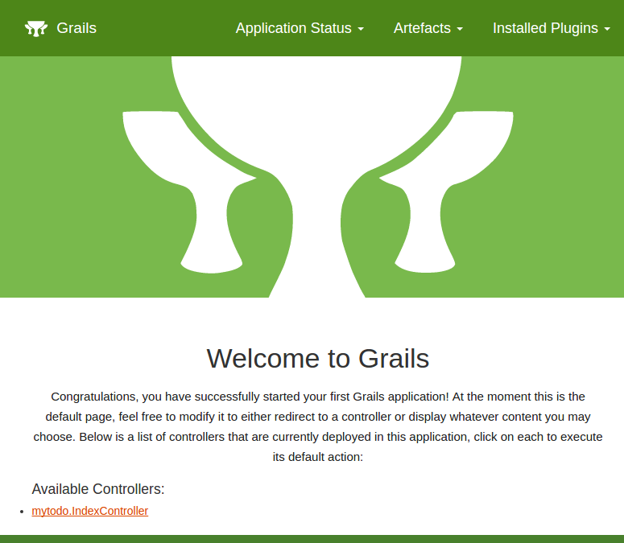

3.1.準備
では実際にGrailsアプリケーションを作成していきましょう。 アプリケーション名はmytodoとします。
[koji:IdeaProjects]$ grails create-app mytodo
Resolving dependencies..
| Application created at /home/koji/IdeaProjects/mytodo
[koji:IdeaProjects]$ cd mytodo
[koji:mytodo]$
アプリケーションが作成できたのでgrailsコマンドを使ってインタラクティブモードに入ります。
[koji:mytodo]$ grails
以降の作業は、特に明示しない限り全てこのインタラクティブモードでの作業になります。
それでは、コントローラを作成します。コントローラ名はindexです。 以下のコマンドを実行してコントローラを作成します。
grails> create-controller index
すると、以下の2つのファイルが作成されます。
grails-app/controllers/mytodo/IndexController.groovy
src/test/groovy/mytodo/IndexControllerSpec.groovy
最初のファイルが実際のコントローラで、次のファイルがそのテスト用のファイルになります。
テストについてはチュートリアルの最後で別途説明します。
では、次にテンプレート（View）を作成します。
コチラは作成用のコマンドは用意されていないので、普通にテキストファイルとして作成します。
以下のファイルを作成してください。grails-app/views/index/index.gsp
ファイルの中身はとりあえず以下のようにしましょう。
<!DOCTYPE html>
<html>
<head>
<meta charset="UTF-8">
<title>ToDo</title>
</head>
<body>
<p>Todo application</p>
</body>
</html>
コレで事前準備は完了です。 Grailsを起動しましょう。
grails> run-app
初めてGrailsを起動するときはライブラリなどがダウンロードされたりするので少し時間がかかります。
最終的に
Grails application running at http://localhost:8080 in environment: development
と表示されればOKです！ ではhttp://localhost:8080にアクセスしてみましょう。

次に、自分で作成したControllerとViewにアクセスしてみましょう！！
URLはhttp://localhost:8080/index/index

これで基本的な準備は完了しました！